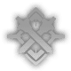

Natasha
 Abundance
Abundance
Material Upgrade


Best Relics

Best Ornaments


Best LightCone


Best Stats
Best Substats
Skills
Basic ATK
Behind the Kindness
Single Target
Memberikan Physical DMG sebesar 50% dari ATK Natasha kepada satu musuh.
Skill
Love, Heal, and Choose
Restore
Segera memulihkan HP sebesar 7% Max HP Natasha +70 pada 1 rekan tim yang ditargetkan, dan di saat bersamaan memulihkan HP sebesar 5% Max HP Natasha +48 pada target setiap gilirannya dimulai, berlangsung selama 2 giliran.
Talent
Innervation
Restore
Saat memulihkan rekan tim dengan persentase HP kurang dari atau sama dengan 0.3%, pemulihan yang diberikan Natasha meningkat 0.25%. Efek ini juga berlaku pada efek pemulihan berkelanjutan.
Technique
Hypnosis Research
Secara langsung menyerang musuh. Setelah Memasuki pertarungan,memberikan Physical DMG sebesar 80% dari ATK Natasha kepada musuh secara acak dengan 100% kemungkinan untuk membuat musuh terkena Efek Weaken. Ketika terkena Efek Weaken, mengurangi damage Dari musuh sebanyak 30% kepada seluruh Rekan.
Ultimate
Gift of Rebirth
Restore
Segera memulihkan HP sebesar 9% Max HP Natasha +92 pada seluruh rekan tim.
Eidolon
Eidolon 1
Phamacology Expertise
Setelah terkena serangan, jika persentase HP Natasha saat ini kurang dari atau sama dengan 30%, Natasha akan menyembuhkan dirinya 1 kali, memulihkan HP sebesar 15% Max HP Natasha + 400. Efek ini hanya dapat dipicu sekali dalam 1 pertempuran.
Eidolon 2
Clinical Research
Saat melancarkan Ultimate, akan memberikan efek pemulihan berkelanjutan selama 1 giliran pada rekan tim dengan persentase HP saat ini kurang dari atau sama dengan 30%. Saat giliran mereka dimulai, memulihkan HP mereka sebesar 6% Max HP Natasha + 160.
Eidolon 3
The Right Cure
Level Skill +2, maksimal Lv. 15. Level Basic Attack +1, maksimal Lv. 10.
Eidolon 4
Miracle Cure
Memulihkan 5 Energy tambahan setelah diserang musuh.
Eidolon 5
Preventive Treatment
Level Ultimate +2, maksimal Lv. 15. Level Talent +2, maksimal Lv. 15.
Eidolon 6
Doctor's Grace
Saat melancarkan Basic Attack, mengakibatkan Physical DMG tambahan sebesar 40% Max HP Natasha.
Traces

Ascension 2
Soothe
Saat melancarkan Skill, menghilangkan 1 Debuff dari 1 rekan tim yang ditargetkan.

Ascension 4
Healer
Pemulihan yang diberikan oleh Natasha meningkat 10%.

Ascension 6
Recuperation
Memperpanjang durasi efek pemulihan berkelanjutan dari Skill selama 1 giliran.
Kelebihan Dan Kekurangan
Efek Healya bersifat Continous Heal Ultimate dapat memberikan Heal ke seluruh Rekan Bisa meremove debuff salah satu rekan tim Energy Charge untuk ultimate terbilang cukup besar
Skillnya hanya memberikan Heal ke satu rekan saja Rentan Terkena Crowd Control debuff sehingga Natasha tidak dapat memberikan Heal yang baik